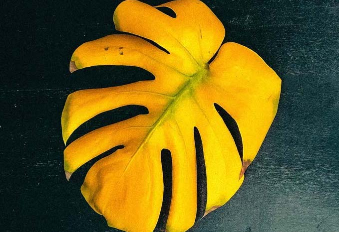

Introduction
This page demonstrates an idea for how progress can be visualized inside of a standard page nav. Scroll the page and note how the marker animates to highlight all of the sections that are currently on screen.
Plant Needs
This page demonstrates an idea for how progress can be visualized inside of a standard page nav. Scroll the page and note how the marker animates to highlight all of the sections that are currently on screen.
Soil Types
Light
High - Medium - Low
Depending on a specific plant this can strongly vary even within the family. There is always that one outsider… It could be your plant which is why it is important to research before purchasing. In this blog more detailed how to categorise the type of light you have, as well as this video talking about the importance of getting it right.
Artificial
It is can be used as an alternative for any of the lights and can be recommended as a more experienced plant parent, with many plants in the collection. The one I have personally tested is SANSI
Problems as a result of lack of light
The plant will show yellow leaves or long stems without the leaves. Discolouration can also be one of the main factors.
Water
This page demonstrates an idea for how progress can be visualized inside of a standard page nav. Scroll the page and note how the marker animates to highlight all of the sections that are currently on screen.
This page demonstrates an idea for how progress can be visualized inside of a standard page nav. Scroll the page and note how the marker animates to highlight all of the sections that are currently on screen.
Fertilisers

What is the deal with it?
It is a food for plants, giving them the right nutions allows them to grow in good health. There is liquid or granular to choose. It typically includes nitrogen,potassium and phosphorus.
Is it really needed?
Your plant can live without it however some types of plants like alocasia would require it. The plant health can still remain at a good level however the growth can be limited.
When and how often ?
The best advice to follow the instructions which will also depend on the family and special plant, however in winter is to reduce the use of it.
Problems
Root burn - if too high concentration is added it might lead to this to happen 
Natural ways :
There are so many ways without extra cost! - cruising the egg shelf with mortar after boiling egg. ( leave the shell to dry first ). When boiling your potatoes or any vegetables, place the water in a jar and leave it to cool off. It is high in potassium after water your plants with it.Here is more ideas of way to do it Make Zero Waste Plant Fertilizer
Problems
The CSS editor lets you author custom styles for your presentation with a real-time preview of the result. It's available as an option inside of the Style panel of the presentation editor.
Yellow leaves
It'll blow your mind.
Donec ullamcorper nulla non metus auctor fringilla. Vestibulum id ligula porta felis euismod semper. Praesent commodo cursus magna, vel scelerisque nisl consectetur. Fusce dapibus, tellus ac cursus commodo.

Root rot
It'll blow your mind.
Donec ullamcorper nulla non metus auctor fringilla. Vestibulum id ligula porta felis euismod semper. Praesent commodo cursus magna, vel scelerisque nisl consectetur. Fusce dapibus, tellus ac cursus commodo.
Your plant is getting soft ?
It'll blow your mind.
Donec ullamcorper nulla non metus auctor fringilla. Vestibulum id ligula porta felis euismod semper. Praesent commodo cursus magna, vel scelerisque nisl consectetur. Fusce dapibus, tellus ac cursus commodo.
Brown leaf
bla bla
Donec ullamcorper nulla non metus auctor fringilla. Vestibulum id ligula porta felis euismod semper. Praesent commodo cursus magna, vel scelerisque nisl consectetur. Fusce dapibus, tellus ac cursus commodo.
Curling leaves
It'll blow your mind.
Donec ullamcorper nulla non metus auctor fringilla. Vestibulum id ligula porta felis euismod semper. Praesent commodo cursus magna, vel scelerisque nisl consectetur. Fusce dapibus, tellus ac cursus commodo.
Pests
Pests
Precaution is the best way to treat it, properly inspecting the plant before purchasing and isolating it from the rest of the plant when placed in your home. However, when any pest is noticed, it should return to isolation and be treated.
Spider Mites
Tiny arachnids consume plants' sap ( liquid created in a plant cell), causing stippling, discolouration, and webbing. How do you find them? Webbing can be noticed on the bottom of leaves where the stem is, stippling (tiny yellow dots), and overall eaten parts of a plant, resulting in little holes closer in the distance. How do we get rid of it? Isolate affected plants to prevent the spread to other plants until the plant is treated a few weeks after as a precaution. Treatment can include special preparations or the use of soup with water.Whiteflies
Tiny flying insects are found in clusters on the undersides of leaves of costuming plant juices. How do you find them? They are white, tiny, moth-like insects often spotted when a plant is moved. How do we get rid of it? Use sticky traps to trap adults; soap or neem oil can also be applied. Ladybugs or parasitic wasps are consumed by them, however. It can only be used when a plant is left outside.Thrips
Insects that feed on plant cells by eating out the contents of a plant. How do I find them? Insects visible on close inspection include bronzing or silvering of leaves, distorted growth, and small, slender insects. How do we get rid of it? The part of the plant that has been consumed should be removed. Similarity soup and oil can be applied. Beneficial insects like predatory mites can be an alternative method.Fungus Gnats
Flies with dark colours eat the roots of plants as larvae. How do you find them? They hide in the soil to lay eggs, and adults spider around plants when disturbed. How do we get rid of it? One of the most effective ways is : beneficial nematodes. Allow the soil to try between watering.Mealybugs
Insects with a texture of cotton-like, waxy substance that consume water fluids of a plant. How do you find them? It can be spotted on the stem of leaves, leaving a White, cottony substance. How do we get rid of it? alcohol can be applied in cotton to wipe off the insectsAphids
The green or back-coloured insects feed on plant sap with quick reproduction. How do you find them? can be spotted as the new growth of of plant How do we get rid of it? Water-dried with a bit of vinegar can work effectively.Examples
// Change presentation background
& {
background: #a83239;}
// Change color of body text
.slides {
color: #009999;
}
// Include a custom font
@font-face {
font-family: "Cabin Sketch";
src:
url("https://s3.amazonaws.com/static.slid.es/fonts/cabinsketch/cabinsketch-regular.ttf") format("truetype");
}
slides h1, .slides h2, .slides h3 {
font-family: "Cabin Sketch";
}